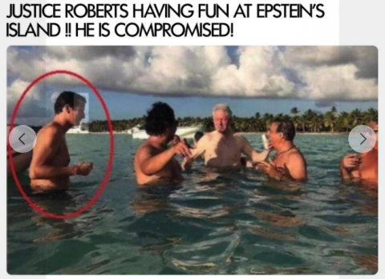
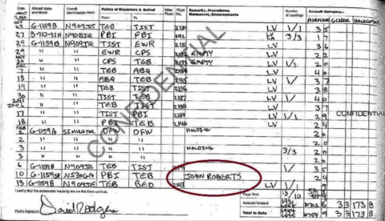

"SOTN Editor’s Note: It must be pointed out that one of the easiest, quickest and most effective ways of destroying any politician’s career is to plant child pornography on their computer or smartphone. Or, to maliciously accuse them of child sexual abuse, or falsely charge them with a sex crime related to a child or minor, or defame their character with a baseless allegation of sexual impropriety toward an underaged individual. Each of these smearing tactics are routinely used by The Powers That Be who manipulate the Pedogate control mechanism that is used to coerce and blackmail political leaders around the world. This multi-decade control system is especially utilized to forever ruin political careers of those individuals who have left the reservation of political correctness." Justice Roberts was caught on photo at Epstein's Island with Bill Clinton and other celebrities.  The Epstein flight logs showing a person named "John Roberts" listed as a passenger.
Source: Dr. Rich Swier.